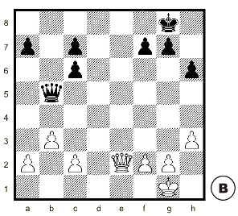
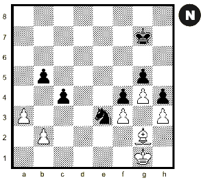
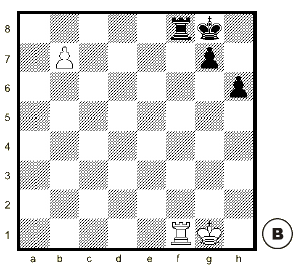
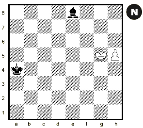

El valor de las piezas es relativo y variable: siempre depende de la posición
Cuando un peón puede coronar, generalmente en los finales, su valor es equivalente al de la futura Dama.
|  |
Ejemplo: Dama activa contra Dama pasiva La Dama blanca es más valiosa que la Dama negra porque está mejor ubicada. Por eso a las blancas todavía no les conviene cambiar Damas. Primero pueden conseguir ventaja dando jaque en e8 y comiendo el peón f: 1.De8+!, Rh7; 2.Dxf7. Pero si cambian Damas ahora, las negras desdoblan su peón c (1.Dxb5?, cxb5) y la partida será tablas. |
|  |
Ejemplo: Caballo activo contra Alfil pasivo El Caballo es más valioso porque está bien ubicado para atacar, mientras que el Alfil está bloqueado por sus peones. A las negras no les conviene el cambio. Las negras ganan si atacan el peón b: 1. ..., Cd1!; 2. Rf1, Cxb2; 3. Re1, c3 Pero la partida será tablas si cambian su Caballo por el Alfil: 1. ..., Cxg2?; 2. Rxg2 |
|  |
Ejemplo: El cambio de Torres permite coronar La Torre negra es más valiosa que la blanca por su importante función defensiva: impide la coronación del peón b. Por eso a las blancas les conviene cambiar las Torres antes que las negras jueguen Tb8. 1.Txf8+!, Rxf8; 2. b8D+ y ganan |
|  |
Ejemplo: El Alfil evita la coronación El peón vale más que el Alfil porque, si las blancas lo coronan, con la Dama dan jaque mate. Además, las negras nunca podrán dar mate sólo con su Alfil. Para no perder las negras tienen que cambiar su Alfil por el peón: 1. ... Axh5!; 2. Rxh5 y tablas. |